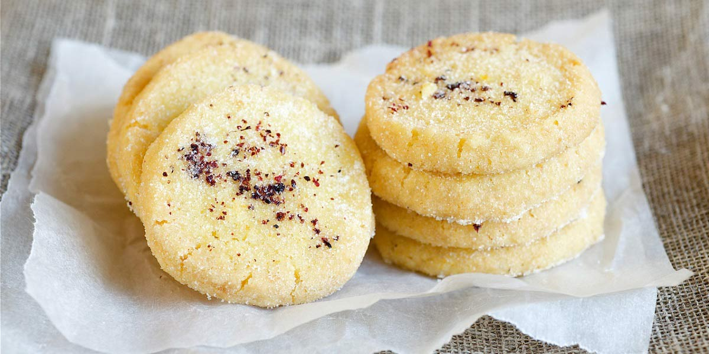

Scottish Short Bread
Recipe Specification
Ingredients List
| Ingredients | Quantity |
|---|---|
| Unsalted Butter | 280g |
| Caster Sugar | 100g |
| Table salt | ¼ tsp |
| Plain Flour | 250g |
| Corn Flour | 125g |
Yield: 24-30 biscuits
Preparation
- Place butter in the microwave for 30-45 seconds until soft.
- In a bowl, use a whisk to cream butter and sugar together until mixture has lightened in complexion.
- Sift plain flour, corn flour and salt into same bowl and begin to work together with finger tips.
- Work until mix resembles bread loose bread crumbs. Be sure not to over work as this will affect the biscuit’s light consistency.
- Lay down three layers of cling film to a flat work surface ensuring there aren’t any residual air bubbles between the layers.
- Compact a sausage shaped amount of short bread mix at the near end of the cling film ensuring that the mixture is evenly distributed.
- fold over cling film and roll with one rotation of the mixture. Use your fingers to work out any air left on the inside of the cling film by going from left to right.
- Continue to roll cling film a round mixture and to ensure a tight cylinder, hold end bit of cling film and roll against work surface.
- Place in the fridge for 2 hours to solidify.
- Line baking tray with greaseproof paper.
- Pre-heat oven to 160’C.
- Remove cylinder from fridge and unravel from cling film before using a sharp hot knife cut 7mm disc and placing them on the baking tray. Ensure that you leave an inch perimeter around each biscuit.
Cooking Instructions
- Place baking tray in the centre of oven and cook for 16-18 minutes.
- Remove from oven, dust with caster sugar and carefully transfer to wire rack to cool for 30 minutes.

Serving Suggestions
Short bread goes great with an English cup of tea.
Storing instructions
Store in an airtight container and place in dry place. Consume within 2 weeks of making it.